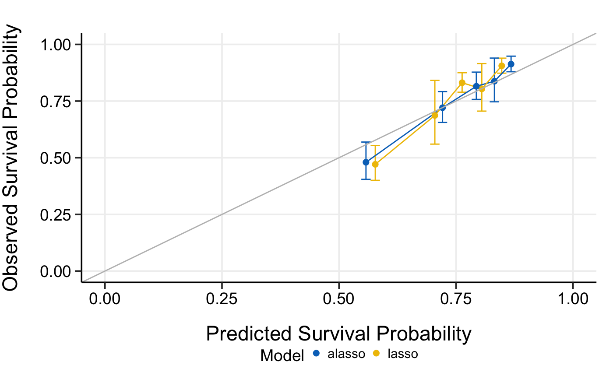

R/5_3_compare_by_calibrate.R
compare_by_calibrate.RdCompare high-dimensional Cox models by model calibration
compare_by_calibrate(x, time, event, model.type = c("lasso", "alasso", "flasso", "enet", "aenet", "mcp", "mnet", "scad", "snet"), method = c("fitting", "bootstrap", "cv", "repeated.cv"), boot.times = NULL, nfolds = NULL, rep.times = NULL, pred.at, ngroup = 5, seed = 1001, trace = TRUE)
| x | Matrix of training data used for fitting the model; on which to run the calibration. |
|---|---|
| time | Survival time.
Must be of the same length with the number of rows as |
| event | Status indicator, normally 0 = alive, 1 = dead.
Must be of the same length with the number of rows as |
| model.type | Model types to compare. Could be at least two of
|
| method | Calibration method.
Could be |
| boot.times | Number of repetitions for bootstrap. |
| nfolds | Number of folds for cross-validation and repeated cross-validation. |
| rep.times | Number of repeated times for repeated cross-validation. |
| pred.at | Time point at which calibration should take place. |
| ngroup | Number of groups to be formed for calibration. |
| seed | A random seed for cross-validation fold division. |
| trace | Logical. Output the calibration progress or not.
Default is |
data(smart) x <- as.matrix(smart[, -c(1, 2)]) time <- smart$TEVENT event <- smart$EVENT # Compare lasso and adaptive lasso by 5-fold cross-validation cmp.cal.cv <- compare_by_calibrate( x, time, event, model.type = c("lasso", "alasso"), method = "fitting", pred.at = 365 * 9, ngroup = 5, seed = 1001 )#> Starting model 1 : lasso #> Start fitting ... #> Starting model 2 : alasso #> Start fitting ...print(cmp.cal.cv)#> High-Dimensional Cox Model Calibration Object #> Random seed: 1001 #> Calibration method: fitting #> Model type: lasso #> glmnet model alpha: 1 #> glmnet model lambda: 0.01345781 #> glmnet model penalty factor: not specified #> Calibration time point: 3285 #> Number of groups formed for calibration: 5 #> #> High-Dimensional Cox Model Calibration Object #> Random seed: 1001 #> Calibration method: fitting #> Model type: alasso #> glmnet model alpha: 1 #> glmnet model lambda: 0.05659628 #> glmnet model penalty factor: specified #> Calibration time point: 3285 #> Number of groups formed for calibration: 5 #>summary(cmp.cal.cv)#> Model type: lasso #> Calibration Summary Table #> Predicted Observed Lower 95% Upper 95% #> 1 0.5774827 0.4708690 0.4003288 0.5538388 #> 2 0.7047467 0.6865737 0.5600854 0.8416279 #> 3 0.7630004 0.8310106 0.7890614 0.8751901 #> 4 0.8050558 0.8037001 0.7056850 0.9153287 #> 5 0.8476220 0.9056255 0.8730862 0.9393774 #> #> Model type: alasso #> Calibration Summary Table #> Predicted Observed Lower 95% Upper 95% #> 1 0.5576225 0.4800023 0.4047667 0.5692221 #> 2 0.7211262 0.7206256 0.6559289 0.7917036 #> 3 0.7933983 0.8153309 0.7573713 0.8777261 #> 4 0.8319860 0.8376938 0.7467546 0.9397076 #> 5 0.8675818 0.9131532 0.8793927 0.9482098 #>plot(cmp.cal.cv)